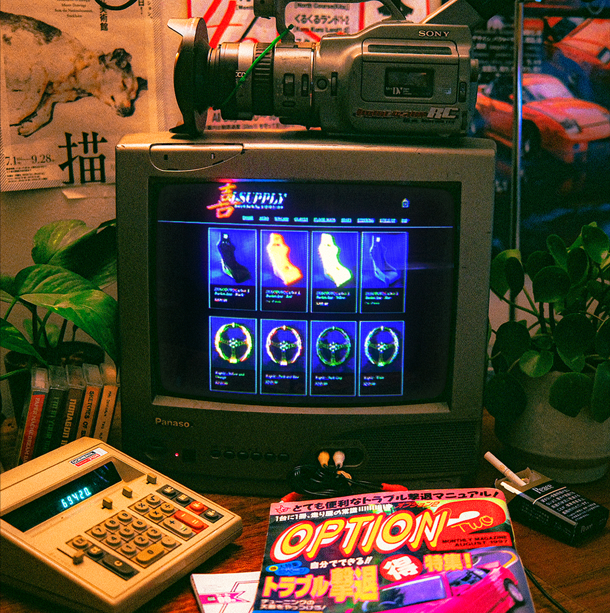

Hoso~Boyo.
2024-present.
Project Hoso~Boyo was established as a branch of Joy-Supply to develop and manufacture old style car parts and accessories to modern standards. All Hoso~Boyo items are directly inspired by the brands and accessories that came out of the golden era of motoring.
More on this project: https://www.joysupplyjapan.com/
